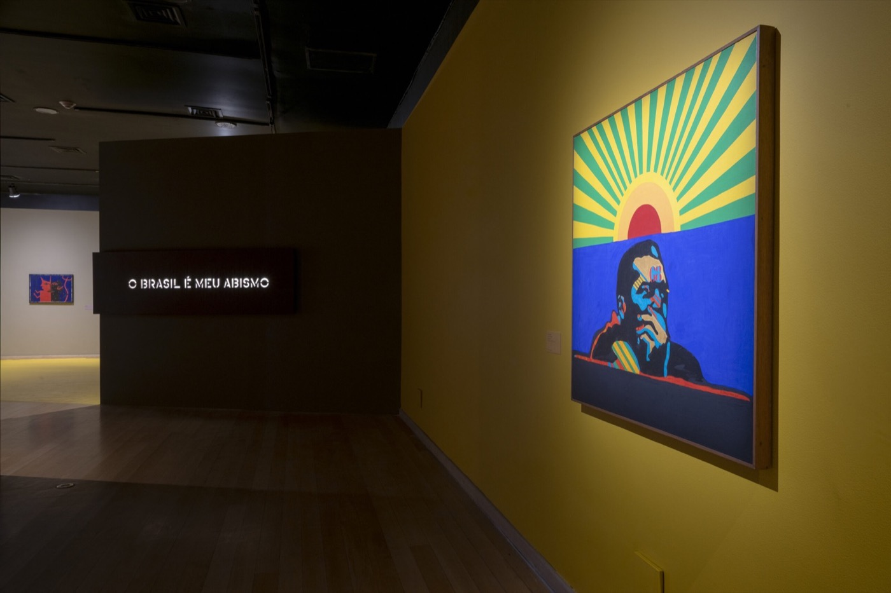
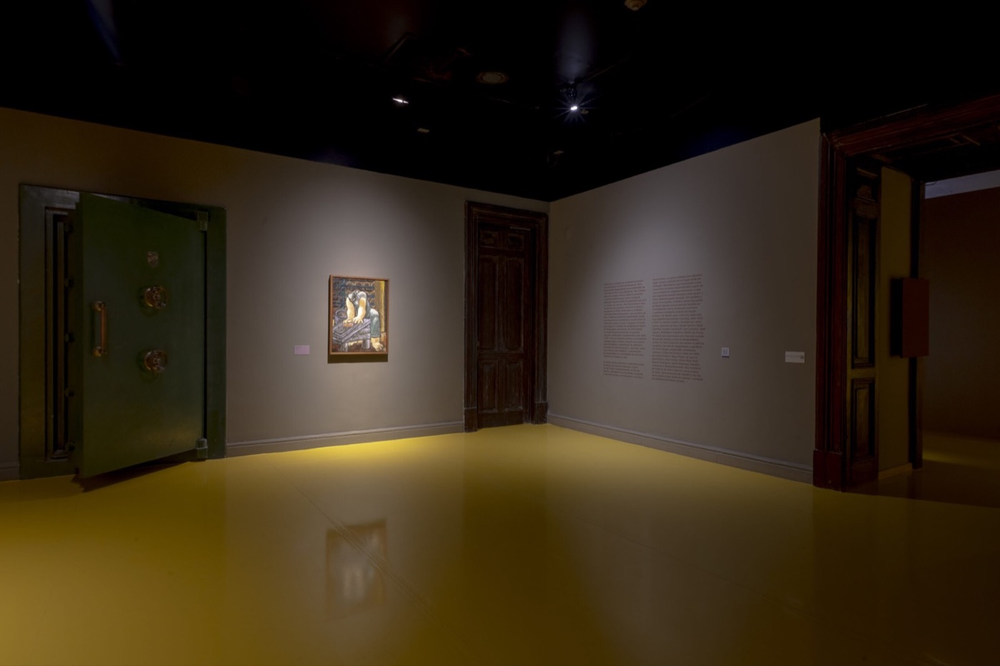
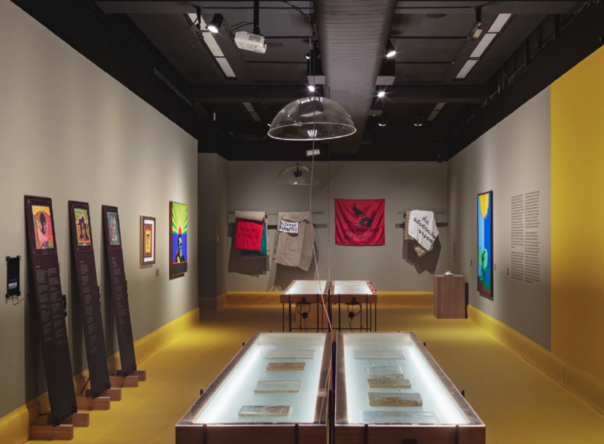
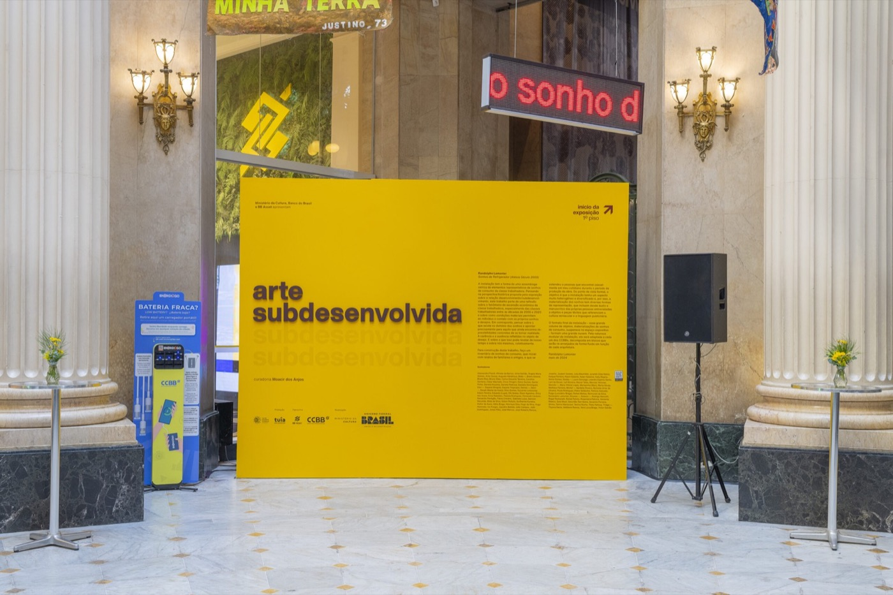
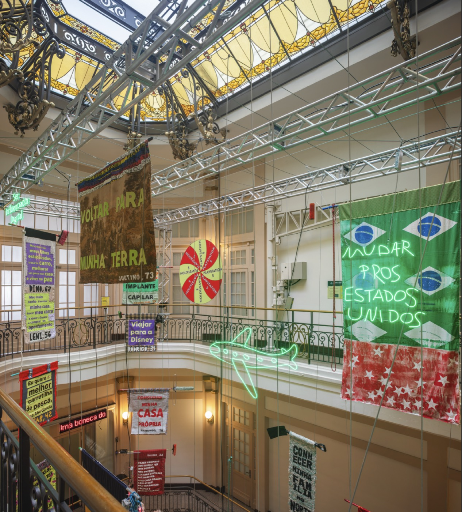

Direção de arte por Gabriel Menezes
Sinalização por Cecília Cartaxo
Curadoria por Moacir dos Anjos
Produção por Tuia arte e produção
Fotografia por Diego Bresani
2024 - 2025
Sobre
Arte Subdesenvolvida foi uma exposição que explora a produção artística brasileira das décadas de 1930 a 1980, refletindo a história política e cultural do país através da obra de mais de 20 artistas. A mostra foi apresentada em diversas unidades do CCBB (Centro Cultural Banco do Brasil), incluindo São Paulo, Rio de Janeiro, Belo Horizonte e Brasília.
Durante as décadas abrangidas pela exposição, a economia, a política e a cultura do Brasil foram marcadas pelo conceito de subdesenvolvimento. Nesse período, foram produzidas obras que refletiam as condições socioeconômicas do país, revelando como uma geração de artistas percebeu e respondeu às realidades da pobreza, da desigualdade e das diferenças estruturais. A exposição destaca como esses artistas utilizaram sua produção como forma de protesto e reflexão crítica.
O que eu fiz
planejamento espacial, sinalização, peças de grande formato, fechamento de arquivos para impressão, peças de divulgação





